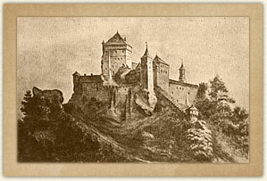
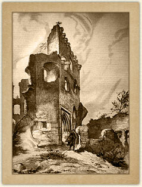
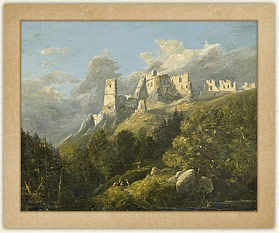
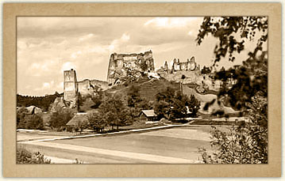

Pierwsze wzmianki o zamku pochodzą z 1348 roku, kiedy to Kamieniec był własnością króla Kazimierza Wielkiego. Po roku 1390 został podarowany
przez Władysława Jagiełłę podkanclerzemu Klemensowi z Moskorzewa. Klemens Moskorzewski stworzył podstawy potęgi
materialnej rycerskiego rodu Pilawitów, rozbudował Zamek Wysoki[patrz plan zamku], wzniósł
od strony wschodniej Zamek Średni, a od strony zachodniej Przedzamcze Odrzykońskie.
Na
piętrze Zamku Wysokiego ulokował i uposażył kaplicę, konsekrowaną w roku 1402. Pod koniec XIV w. Kamieniec stał się rezydencją Klemensa, którego
wnukowie w roku 1452 właśnie od nazwy zamku przyjęli nazwisko Kamienieckich. Wzrost zamożności i pozycji społecznej rodu Pilawitów
był zasługą Henryka, który zmarł w 1488 roku. Najwybitniejszym z synów Henryka był najstarszy Mikołaj, związany z dworem królewskim, hetman
małopolski kierujący obroną ziem ruskich. W roku 1502 król mianował Mikołaja Kamienieckiego pierwszym w historii wojska polskiego
hetmanem wielkim koronnym. W tym okresie do Zamku Średniego zostało dobudowane od wschodu Przedzamcze Korczyńskie. Okres
współgospodarowania braci Kamienieckich zakończył się w roku 1512 układem o podziale majątku. W 1530 roku Zamek Korczyński, Kamieniecki odsprzedał
Sewerynowi Bonerowi, którego córkę poślubił syn wojewody lubelskiego Firleja. Zamek Wysoki od roku 1599 do 1601 należał
do Stadnickich, w 1601 nabywają go Skotniccy. Kolejnymi właścicielami są Stadniccy, Scypionowie
del Campo, Kalinowscy, Jabłonowscy, Fredrowie, Starowieyscy i Szeptyccy.
Prace modernizacyjne prowadzone przez Seweryna Bonera po roku 1530 na Zamku Średnim i Przedzamczu Korczyńskim, oraz restauracja Zamku Wysokiego dokonana
przez Skotnickich na początku XVII w. były ostatnim etapem w historii budowlanej zamku. Rola Kamieńca jako warowni i punktu strategicznego skończyła
się w pierwszej połowie XVII w. Podczas potopu szwedzkiego zamek poważnie ucierpiał i pomimo remontów podejmowanych przez
kolejnych właścicieli, w połowie XVIII w. coraz bardziej chylił się ku upadkowi, a w 1786 był już zrujnowany.
Ruiny zamku w polskiej tradycji romantycznej

Przemiana zamku w ruinę symbolicznie wiązana jest z upadkiem Rzeczypospolitej. Znajduje to wyraz w literaturze oraz licznie publikowanych widokach zamku.
Jako pierwszy maluje widok ruin Odrzykonia Adam Gorczyński (późniejszy Konserwator Galicji Zachodniej).
W roku 1834 we Lwowie ukazuje się „Zemsta” Aleksandra Fredry.

Rok 1842 przynosi publikację poematu Seweryna Goszczyńskiego „Król zamczyska”. Romantyczna wizja ruin Kamieńca
przedstawiona w utworze, ma swe źródło w bezpośrednich wrażeniach poety, który goszcząc we dworze Jabłonowskich odwiedził Odrzykoń.
Na zamku spotkał ekscentrycznego rezydenta odrzykońskich ruin - Machnickiego, którego uczynił później tytułowym bohaterem poematu. Wpływ
popularnego dzieła Goszczyńskiego na sposób interpretacji ruin odrzykońskich okazał się ogromny. W roku 1860 powstaje cykl rysunków Jana Matejki
rejestrujących wygląd Odrzykonia. Jest wśród nich inspirowana poematem Goszczyńskiego, wizja króla zamczyska - Machnickiego, stojącego u wrót
Zamku Wysokiego.
W 1874 roku Konserwator Galicji Wschodniej Mieczysław Potocki, pisze o Goszczyńskim i roli jego dzieła:
geniusz poety stanął na straży tej wielkiej ruiny, której odtąd jedynie burze czasu zagrażać mogą,
bo troskliwa opieka i właściciela i rządu zniszczeniu ręki ludzkiej położyła tamę.
Potocki uzyskuje od naczelnika powiatu zakaz rozbiórki ruin zamkowych, a od gminy miejskiej zobowiązanie do obsadzenia stoków krzewami zabezpieczającymi
przed osuwaniem.
Artyści i konserwatorzy XIX wieku swoimi działaniami ukształtowali w świadomości społecznej okolic, obraz zamku w Odrzykoniu jako ruiny historycznej
pełniącej przez cały okres swego trwania misję kulturową „świadectwa przywołującego przeszłość". W stulecie insurekcji kościuszkowskiej,
na zamówienie gminy odrzykońskiej rzeźbiarz Andrzej Lenik wykonał w kamieniu popiersie Tadeusza Kościuszki. Latem 1894 roku ustawiono
je wraz z cokołem na Zamku Wysokim. Do dzisiaj stanowi nieodłączną część ruin.
Prace konserwatorskie w czasach PRL-u
Romantyczny pietyzm dla ruin Odrzykonia uzasadnił sens społecznego funkcjonowania ruiny, co wpłynęło na sposób interpretacji konserwatorskiej obiektu
w XX w. Na żadnym etapie prac nie pojawił się bowiem pomysł pełnej rekonstrukcji zamku.
W roku 1952 zabezpieczono najbardziej zagrożone odcinki elewacji. Począwszy od roku 1951 prowadzono badania archeologiczne. Zespół Badań nad Polskim
Średniowieczem UW i PW, wykonał szczegółową inwentaryzację konserwatorską oraz badania architektoniczne. Ponieważ ruiny nie tworzyły zamkniętego wnętrza,
nie istniejący mur zewnętrzny, południowy miał zostać nadmurowany do takiej wysokości, aby zamknął koncepcyjnie wnętrze i uniemożliwił niekontrolowane
wejście na zamek. Zaplanowano naprawę korony murów przy zachowaniu nie zmienionego zarysu sylwety ruin. Zrealizowany projekt urbanistyczny przystosował
otoczenie zamku do celów turystycznych, co wiązało się z realizacją drogi Czarnorzeki - Odrzykoń i dojściem do ruin.
Z wieloetapowego projektu konserwatorskiego tylko część została wykonana (1978 - 1989). Najważniejsze prace objęły mury kurtyn: południowej, wschodniej,
budynek wartowni i bramę na Zamku Średnim.
Prace zostały wstrzymane decyzją wojewody w roku 1990. Nastąpił trudny okres dla obiektu, faktycznie pozbawionego opieki właścicielskiej, skazanego
na dewastację wandali i pseudoturystów. Zamek położony na granicy dwóch gmin: Korczyny i Wojaszówki, stał się problemem zarówno dla służb konserwatorskich,
jak i władz samorządowych.
W roku 1995 krośnieński kolekcjoner i pasjonat zabytków wydzierżawił od gminy korczyńską część zamku. W 1998 roku (kiedy to ruiny zamku Kamieniec zostały
uznane za własność Skarbu Państwa) komisyjnie oddano mu cały zamek w wieloletnią dzierżawę.